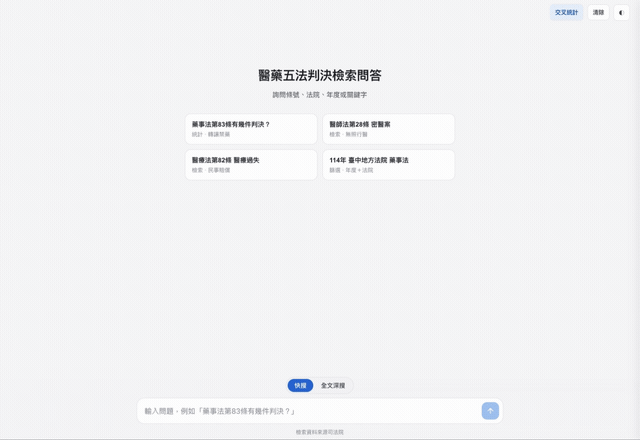

司法院裁判書 · 裁判日期 112–115 年
醫藥五法判決檢索與分析
對醫藥五法(藥事法、醫療器材管理法、醫療法、醫師法、藥師法)近年判決做的檢索與分析工具。全文檢索、條號/法院/年度篩選、交叉統計,每一筆都連回司法院原始裁判書;純前端、可離線、執行期不呼叫任何 AI。
藥事法醫療器材管理法醫療法醫師法藥師法
14,031去重判決
112–115裁判年度
42法院
0執行期 AI 呼叫

這是什麼
一套資訊檢索(IR)系統,外觀做成對話介面:輸入條號、法院、年度或關鍵字,系統以索引比對與全文檢索找出相關判決,並附上引用來源。與生成式 AI 不同,答案由查表與模板組出,可離線、零推論成本、每項結果皆可對應原始裁判資料。
功能
- 快搜:對結構欄位、適用條號、案由、判決結果做即時檢索與篩選(法規/條號/法院/年度/類別)。
- 全文深搜:對 14,031 篇判決的整篇全文做任意字/片語檢索,命中片段高亮,並可在側欄閱讀全文。
- 交叉統計:法院 × 年度 × 類別的互動熱力圖。
- 常見主題:密醫罪(醫師法§28)、轉讓禁藥(藥事法§83)、妨害醫療業務(醫療法§106)、醫療過失(醫療法§82)等。